Zero to Cloud-Native with IBM Cloud
Part 14: Deploy Satellite Infrastructure on IBM Cloud VPC
Kevin Collins ( kevincollins@us.ibm.com )
Kunal Malhotra ( kunal.malhotra3@ibm.com )
1 - Introduction
As you learned in the previous section, IBM Cloud Satellite can be deployed anywhere that you want from onPrem, to a cloud provider such as AWS, Azure, GCP, to the edge, or even on IBM Cloud. The instructions here will show you how to provision infrastructure on IBM Cloud VPC. While certain other options and providers will have different instructions the same concepts will apply. To simulate a more realistic environment, we will be deploying a private only Virtual Private Cloud with no Internet Connectivity.
2 -- Provision IBM Cloud Virtual Private Cloud
2.1 Edit Attach Host Scripts
In Section 14, when you first created your satellite location, you downloaded two 'attachHosts' scripts. These attachHost scripts are what tells IBM Cloud Satellite to use these hosts in your Satellite location. Before the attach host script can be ran, we need to run two commands on each instance to ensure the correct RedHat packages are installed. To automate running these scripts when the attach host script is ran, we need to edit both attach host scripts to include these commands.
Open you code editor and open either attachHost file you downloaded.
Look in the file for a line that starts with API_URL and add the following three lines of code:
# enabling dependencies required by satellite
subscription-manager refresh
subscription-manager repos --enable=*
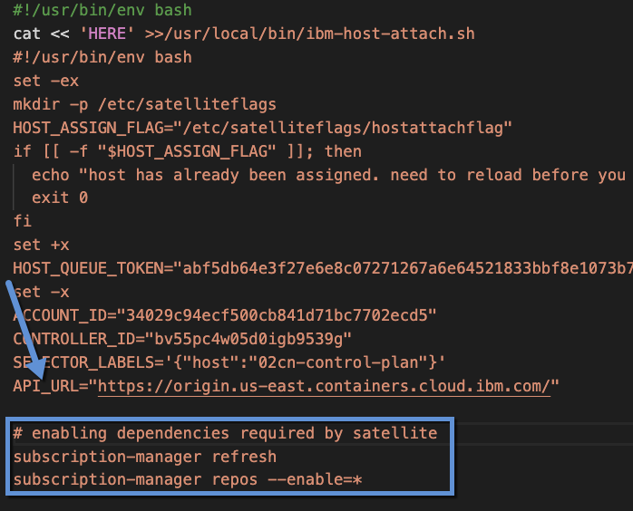
Repeat the same steps for the other attachHost file.
2.2 Create a VPC Infrastructure for the Satellite Control Plane
From your IBM Cloud menu, navigate to VPC Infrastructure and then select VPCs.
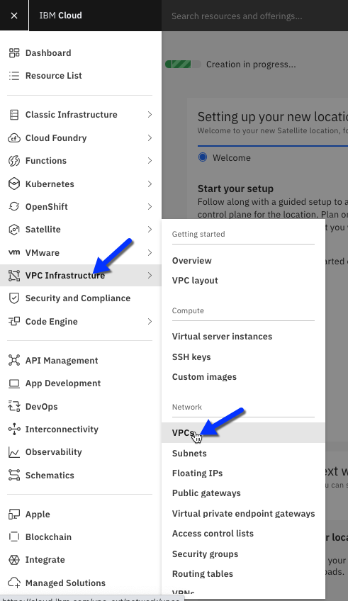
To simulate a remote location, we will be creating a new private only VPC meaning there will be no connectivity outside of our VPC. From the Virtual Private Cloud page, click Create.
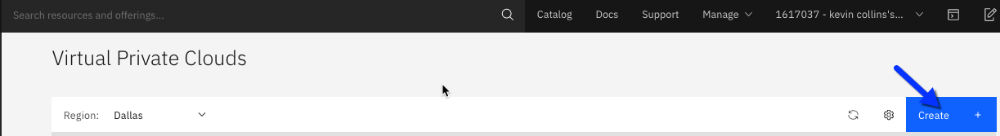
Enter a name of the VPC, I will be using zero-to-cloud-native-satellite-vpc and select your zero-to-cloud-native resource group.
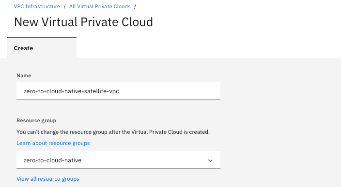
Keep the remaining default settings and scroll down to New subnet for VPC.
We will be created a multizone region across Dallas for our Satellite location. This means we will need to create a subnet for each zone. Starting with Dallas 1, give your subnet a meaningful name so you can find it later; I will be using satellite-02cn-dal1 and the zero-to-cloud-native resource group. Select Dallas1 as the location.
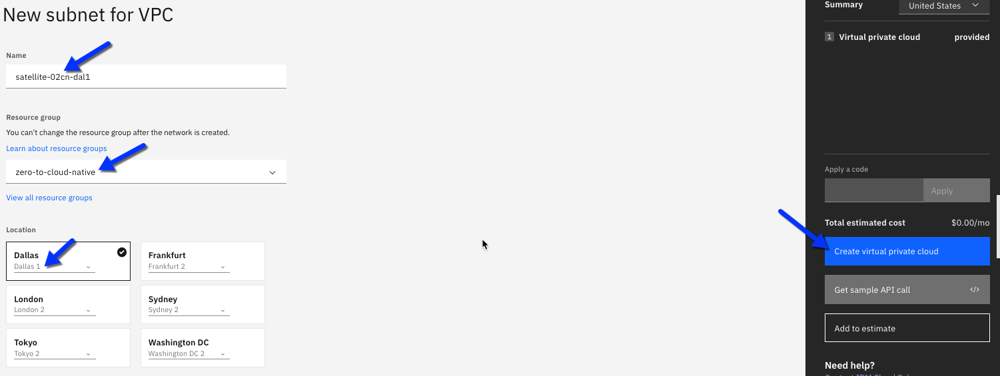
Make sure to attach the Public Gateway attached. You can remove this later, but we need this enabled for setup and configuration.
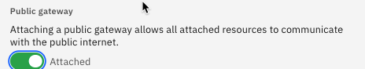
Keep the remaining settings as-is and click Create virtual private cloud.
Next up, we need to create the two other subnets in Dallas 2 and Dallas 3 for our multizone location. To do so, from the IBM Cloud Menu under VPC Infrastructure, click on Subnets.
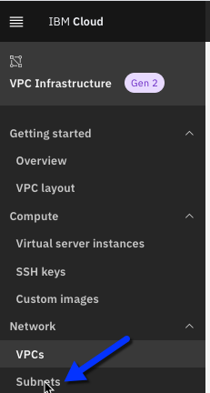
On the next screen, click Create.
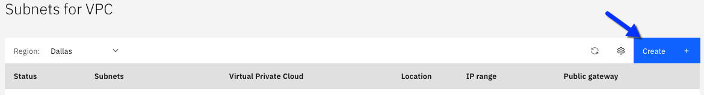
Give you subnet for Dallas 2 a name, I will be using satellite-02cn-dal2, select the name of your virtual private cloud which should be zero-to-cloud-native-satellite-vpc, and the zero-to-cloud-native resource group. The location for this subnet should be Dallas 2. After entering all of these settings click on Create Subnet.
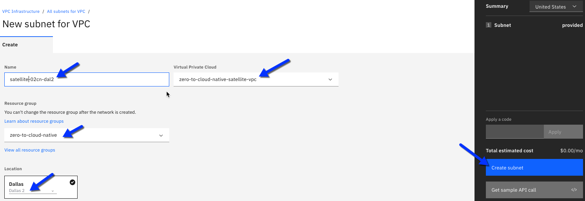
Repeat the same steps to create a final subnet in Dallas 3.
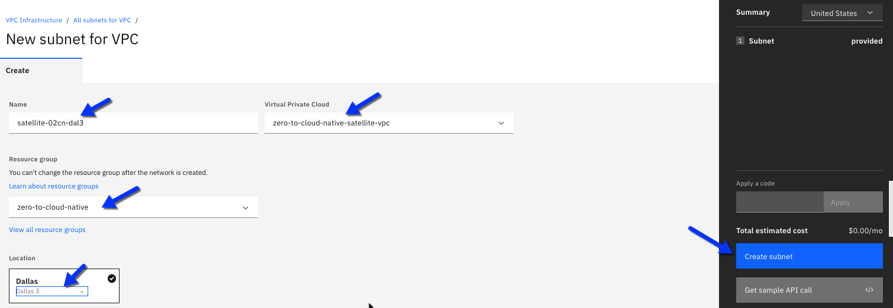{width="6.5in" height="2.25in"}
3 Create VPC Infrastructure
The first step in creating your satellite location is to provision infrastructure that your satellite location will use. In this tutorial we will be provisioning infrastructure in a VPC for both the control plane and the worker nodes for our IBM Cloud Managed OpenShift cluster.
3.1 VPC Infrastructure for the Satellite Control Plane
We will start by provisioning the VPC infrastructure for the control plane. You can view this control plane as the master nodes for the IBM Cloud Managed OpenShift cluster will be creating.
3.1.1 VPC InstanceTemplate
Now that we have a virtual private cloud configured with subnets, we can add hosts for the Satellite control plane to our VPC. The best way to create these VPC instances is to use an Instance Template. A VPC instance template is used to define instance details for provisioning our virtual servers for the control plan. This will enable us to quickly create consistent images for our control plane.
To create an instance template, from the IBM Cloud menu, under VPC Infrastructure, expand Auto scale and then select Instance templates.
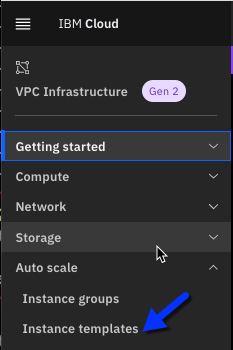
On the next screen, click on Create to create your first instance template. We will be creating a template for each zone for our control plane. Starting with Dallas 1, give the template a meaningful name, I will use satellite-02cn-control-plane-dal1. Select your zero-to-cloud-native-satellite-vpc VPC and the zero-cloud-native resource group. This template will be for Dallas 1 so also select Dallas 1 as the location.
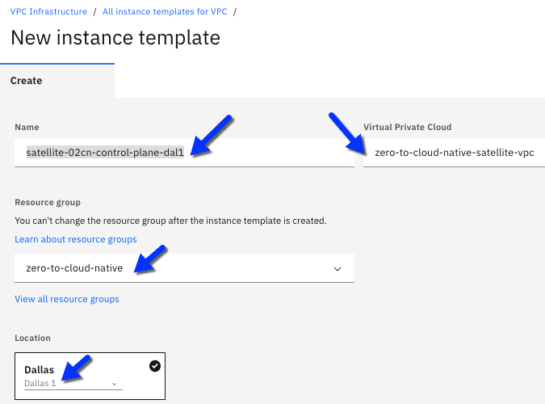
For the Operating System, select 7.x Minimal Install under Red Hat Enterprise Linux. For the machine profile, I will keep the default to 8x32, but you could go down to 4x16 if you wish.
If you already have a ssh key attached to your account, select it under SSH keys. If you don't have an SSH Key attached to your account, follow the next steps.
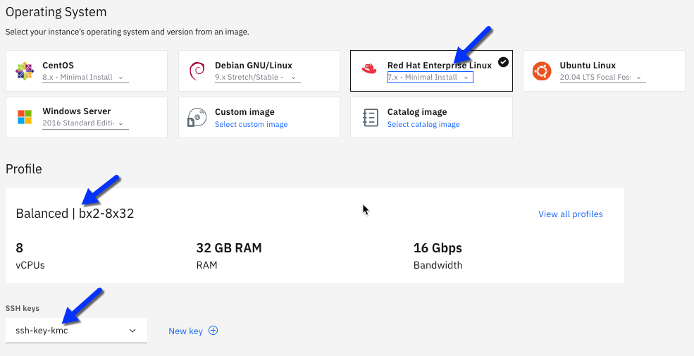
3.1.1.1 Create a SSH Key
If you don't have an SSH key associated with your IBM Cloud account, follow the steps below to create an SSH key and add it to your IBM Cloud account.
Start your terminal and navigate to a directory where you want to store your SSH Key and run the following command.
ssh-keygen -m PEM -t rsa -f "\<email address>"
Hit enter for no passphrase when prompted.
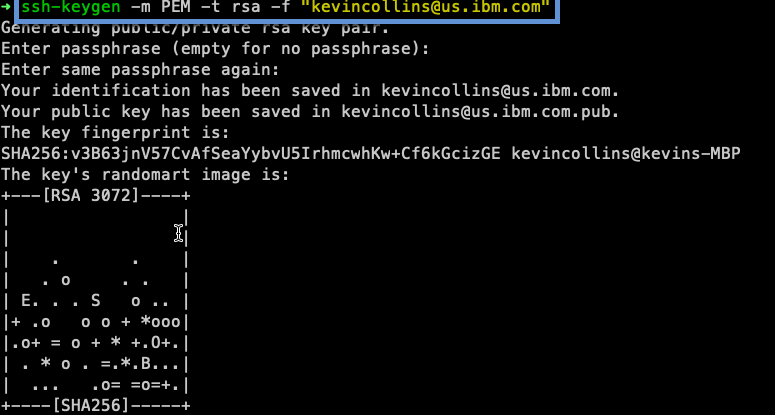
Next, type cat the .pub file that was just created. The naming convention will be the email address you entered in the previous command plus '.pub'.
cat \<email address>.pub
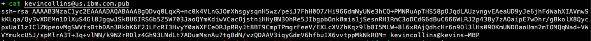
Copy the entire output starting with ssh-rsa to your clipboard. Back in your browser, click New key.
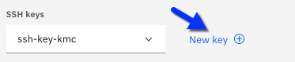
On the next screen, give a name for your key such as ssh-key-\<initials>. Select the zero-to-cloud-native resource group and Dallas the Region. Paste in the key you just copied in the Public key field and then click on Add SSH key.
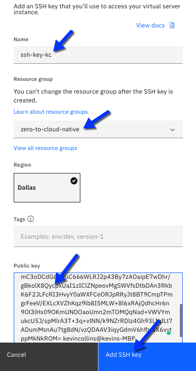
3.1.1.2 Create the Instance Template
Back to creating a new Instance Template. We need to include the attach host files that we downloaded and edited in section 2. To include this file on our instance images, click on Import user data.
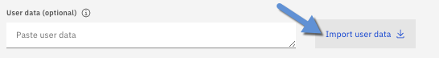
On the next screen, select sat-host-check and attachHost-satellite-02cn-control-plane.sh.
*IMPORTANT -- make sure you followed the instructions in section 2.2 Edit Attach Host Scripts before importing this file.
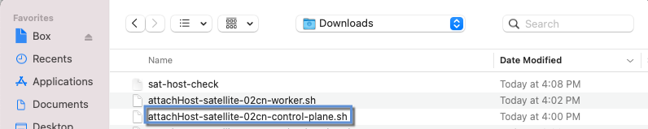
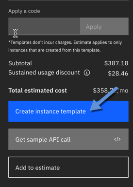
Next, we will create the same instance templates for the Satellite control plane for Dallas 2 and Dallas 3 locations.
Dallas 2 Instance Template:
The instance template for Dallas 2 should look exactly like the template for Dallas 1. To create the same template for Dallas 2, click on three dots next to the Dallas 1 template and select Duplicate.
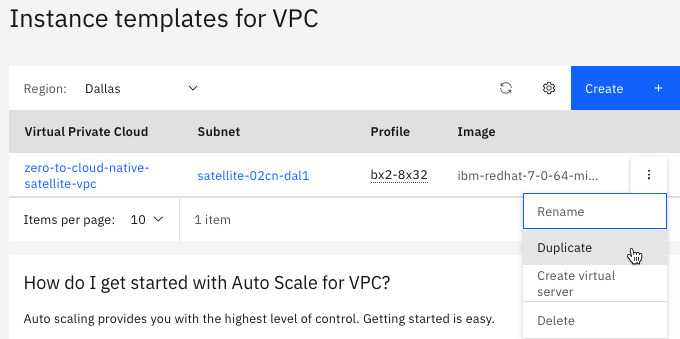
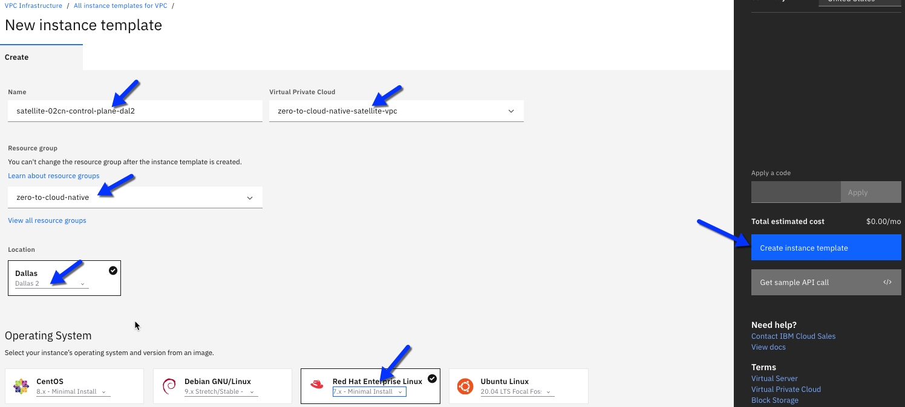
Make sure to enter the following settings:
Name: satellite-02cn-control-plane-dal2
Virtual Private Cloud: zero-to-cloud-native-satellite-vpc
Resource Group: zero-to-cloud-native
Location: Dallas 2
User Data -- import attachHost... control-plane
Dallas 3 Instance Template:
Follow the same steps and duplicate either the Dallas 1 or Dallas 2 control plane template and make sure to enter the following settings:
Name: satellite-02cn-control-plane-dal3
Virtual Private Cloud: zero-to-cloud-native-satellite-vpc
Resource Group: zero-to-cloud-native
Location: Dallas 3
User Data -- import attachHost... control-plane
3.1.2 VPC Instance Group for the control plane
Now that we have our VPC Instance templates setup, we can now create an instance group based on the template. An instance group is a collection of like virtual server instances. You define how many instances to maintain in the group. You can set a static number of instances or choose to dynamically scale instances according to your requirements. Our instance group will allow us to scale the control plane using the same instance template we created in the previous step.
To create a VPC instance group, click on Instance Groups under in the VPC Infrastructure menu under Auto Scale.
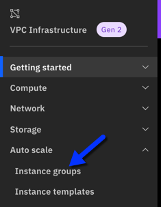
On the next screen, click Create.
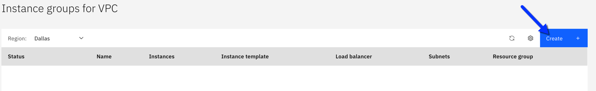
We will be creating an instance group for each data center in our satellite location, Dallas 1, Dallas 2, and Dallas 3. Starting with Dallas 1, enter the following settings:
Name: satellite-control-plane-dal1
Resource Group: zero-to-cloud-native
Tags: env:satellite-02cn-control-plane
Note: it is very important to give a meaningful tag so we can tell all the different instances we have from one another. For example, if you have multiple clusters and multiple cloud services running in IBM Cloud tags can quickly identify instances from one another.
Region: Dallas
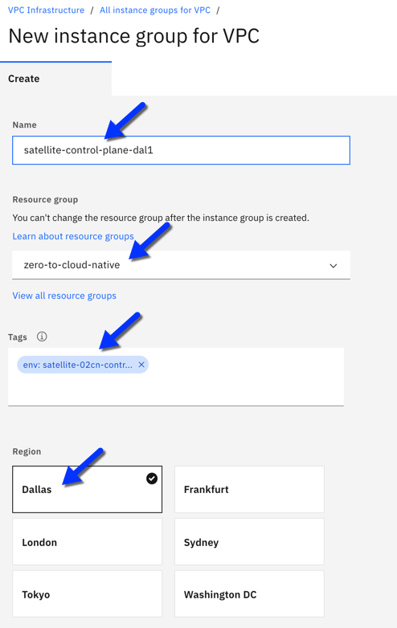
Next, select the instance template for this instance group. Since this is the instance group for Dallas 1, select with satellite-02cn-control-plane-dal1 instance template. Likewise, for subnet, select the satellite-02cn-dal1 subnet. Leave load balancer unchecked. We don't need a load balancer because ... KUNAL. Finally, select Static so the instance group will hold a set size. We need this because KUNAL ...
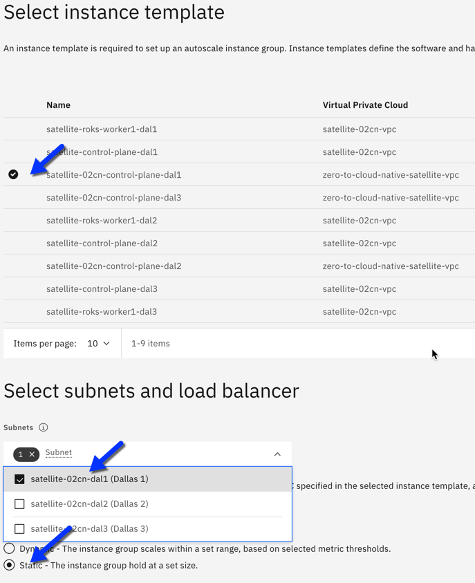
The last thing we need to do is set the instance group size. For this tutorial, we will create 1 control plane master node in each data center. Select 1 for the intial size. For a production level system, you will want at least 2 hosts per zone.
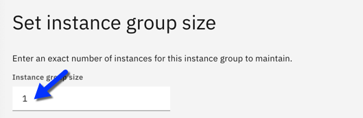
After entering all of these settings, click that you agree to provision this virtual server and click Create instance group.
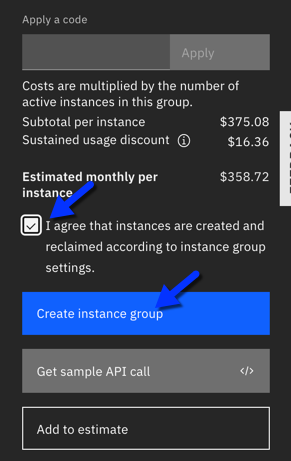
This will start provisioning a virtual machine based on the virtual instance template that we associated with this instance group, which is in Dallas 1.
Next, we need to repeat the same steps for Dallas 2 and Dallas 3.
Dallas 2 Instance Group
Name: satellite-control-plane-dal2
Resource Group: zero-to-cloud-native
Tags: env:satellite-02cn-control-plane
Region: Dallas
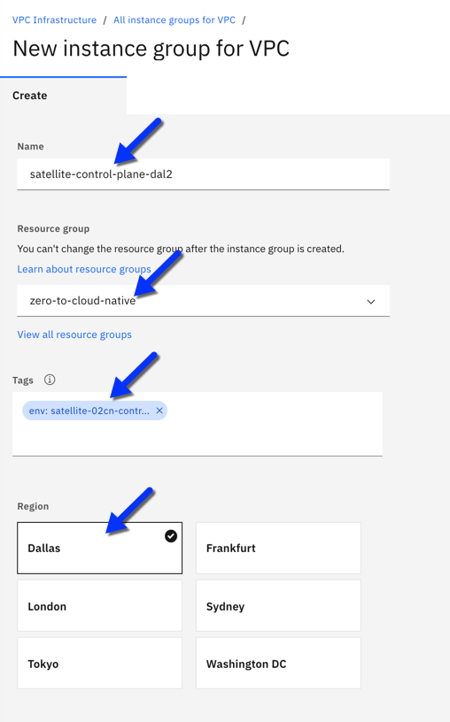
Select the satellite-02cn-control-plane-dal2 instance template and the satellite-02cn-dal2 subnet.
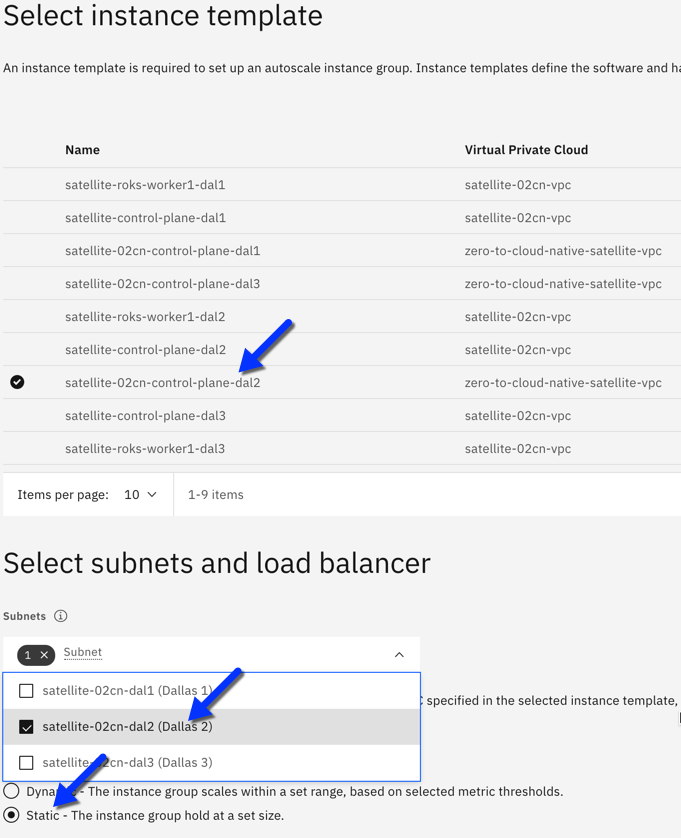
As with Dallas 1, keep the instance group size to 1 and create the instance group.
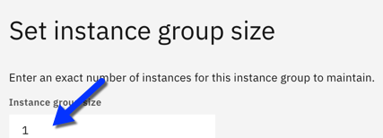
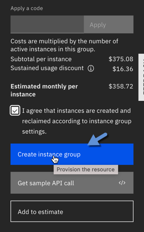
We now have infrastructure provisioned for the control plane in Dallas 1 and Dallas 2, to finish provisioning all the infrastructure for the satellite control plane, repeat the same steps for Dallas 3.
\
Dallas 3 Instance Group
Name: satellite-control-plane-dal3
Resource Group: zero-to-cloud-native
Tags: env:satellite-02cn-control-plane
Region: Dallas
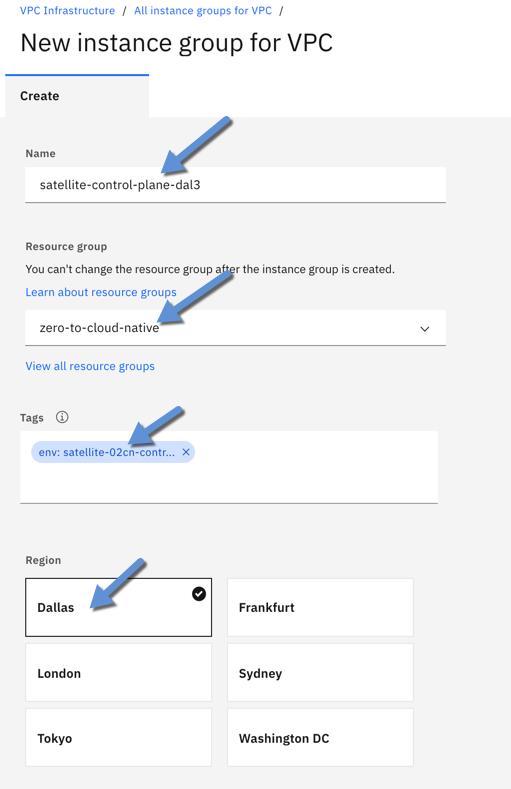
Select the satellite-02cn-control-plane-dal3 instance template and the satellite-02cn-dal3 subnet.
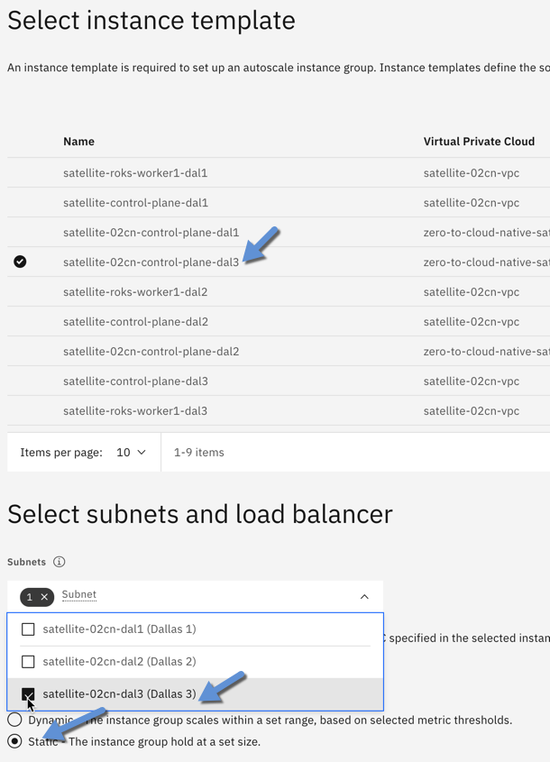
keep the instance group size to 1 and create the instance group.
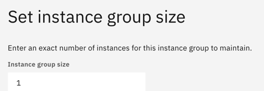
This completes provisioning the VPC infrastructure for our satellite control plane.
3.2 VPC Infrastructure for the Satellite IBM Cloud Managed OpenShift Worker Nodes
Now that we have our control plane infrastructure provisioned, we can move on to provisioning our infrastructure for our IBM Cloud Managed OpenShift worker nodes. We will be following the same process to create infrastructure as we did for the control plane. As a reminder, we will be deploying a multizone cluster across Dallas 1, Dallas 2, and Dallas 3 with 2 worker nodes in each zone.
3.2.1 ROKS VPC Infrastructure Instance Template
As we did with the control plane, we will be using instance templates to consistently build out like images for each of our worker nodes.
3.2.1.1 Dallas 1 Instance Template
Starting with Dallas 1, from the VPC Infrastructure menu, select Instance Template.
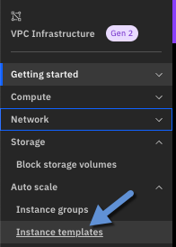
On the next screen, click Create.
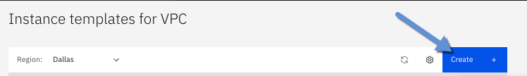
Enter the following settings for the next Instance template.
Name: satellite-02cn-worker-dal1
Virtual Private Cloud: zero-to-cloud-native-satellite-vpc
Resource Group: zero-to-cloud-native
Location: Dallas 1
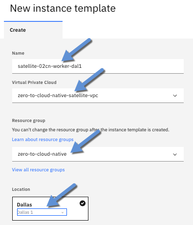
In the Operating System Section, select Red Hat Enterprise Linux 7.x Minimal Install. For the flavor we are going to go with 16x64 worker nodes. To change the profile, click on View all profiles.
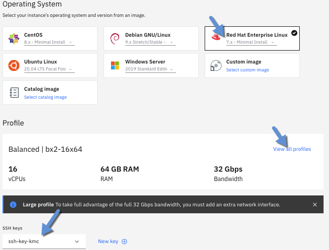
On the profiles screen, select 16x64 and click Save.
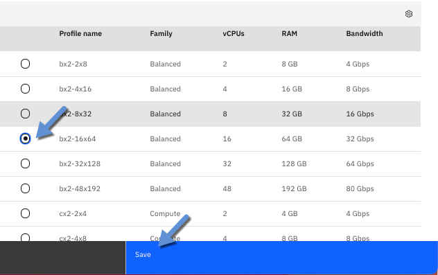
We need to include the attach host files that we downloaded and edited. To include this file on our instance images, click on Import user data.
On the next screen, select sat-host-check and attachHost-satellite-02cn-worker.sh.
*IMPORTANT -- make sure you followed the instructions in section 2.2 Edit Attach Host Scripts before importing this file.
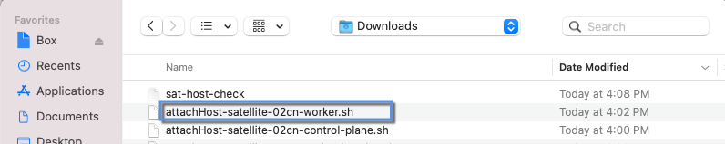
Finally, click Create instance template.
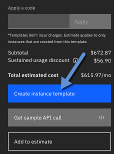
3.2.1.2 Dallas 2 Instance Template
Follow the same steps to create the same instance template for Dallas 2. To save time, you can copy the instance template for the Dallas 1 worker and modify the settings.
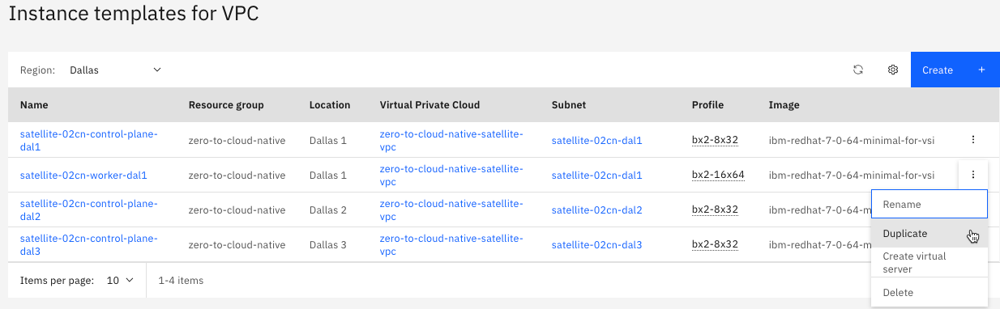
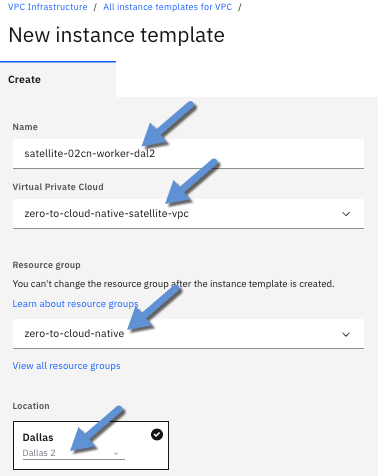
Enter the following settings for the next Instance template.
Name: satellite-02cn-worker-dal2
Virtual Private Cloud: zero-to-cloud-native-satellite-vpc
Resource Group: zero-to-cloud-native
Location: Dallas 2
In the Operating System Section, select Red Hat Enterprise Linux 7.x Minimal Install. For the flavor we are going to go with 16x64 worker nodes. To change the profile, click on View all profiles.
On the profiles screen, select 16x64 and click Save.
We need to include the attach host files that we downloaded and edited. To include this file on our instance images, click on Import user data.
On the next screen, select sat-host-check and attachHost-satellite-02cn-worker.sh.
*IMPORTANT -- make sure you followed the instructions in section 2.2 Edit Attach Host Scripts before importing this file.
Finally, click Create instance template.
3.2.1.3 Dallas 3 Instance Template
Enter the following settings for the next Instance template.
Name: satellite-02cn-worker-dal3
Virtual Private Cloud: zero-to-cloud-native-satellite-vpc
Resource Group: zero-to-cloud-native
Location: Dallas 3
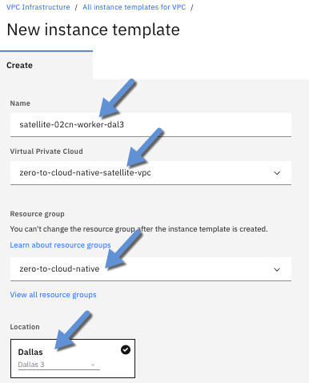
In the Operating System Section, select Red Hat Enterprise Linux 7.x Minimal Install. For the flavor we are going to go with 16x64 worker nodes. To change the profile, click on View all profiles.
On the profiles screen, select 16x64 and click Save.
We need to include the attach host files that we downloaded and edited. To include this file on our instance images, click on Import user data.
On the next screen, select sat-host-check and attachHost-satellite-02cn-worker.sh.
*IMPORTANT -- make sure you followed the instructions in section 2.2 Edit Attach Host Scripts before importing this file.
Finally, click Create instance template.
3.2.2 ROKS VPC Infrastructure Instance Group
Now that we have instance templates for each zone, we need to create an instance group, just like we did for the control plane, so that we can quickly provision and scale multiple worker nodes at the same time.
3.2.2.1 Dallas 1 Worker Node Instance Group
To create a new instance group template, click on Instance templates from the VPC Infrastructure menu.
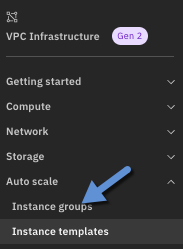
From the Instance Group screen, click on Create.
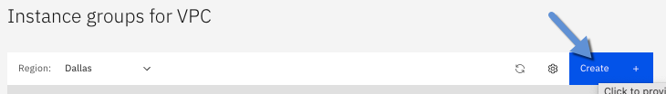
Enter the following settings to create a new Instance Group for Dallas 1.
Name: satellite-02cn-workers-dal1
Resource Group: zero-to-cloud-native
Tags: env:satellite-02cn-workers
Region: Dallas
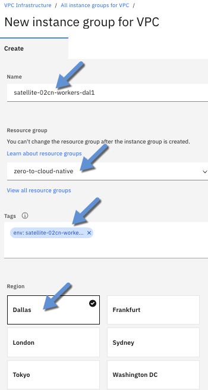
Under instance template, select the satellite-02cn-worker-dal1 template.
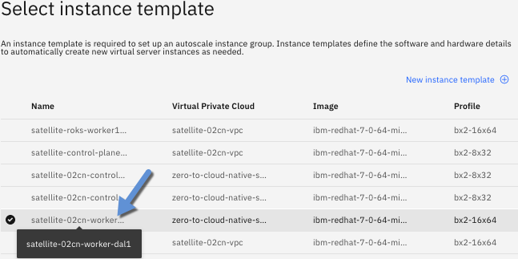
Select the satellite-02cn-dal1 Subnet. And Select Dynamic of the instance group scaling method.
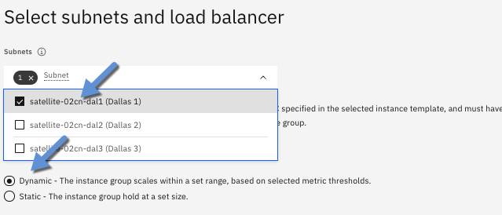
For instance group size, select 2 as the minimum and 6 as the maximum. This means our cluster will have a minimum of at least 2 worker nodes and will be able to scale to 6 based on the workload.
Set the aggregation window to 300 seconds. This means the scaling metrics will be scanned very 300 seconds.
Set the cooldown period to 3000 seconds. This is how many seconds scaling will pause after scaling so we don't scale unnecessarily.
Finally, click that you agree to provision the number of instances we have indicated, and click on Create instance group.
3.2.2.2 Dallas 2 Worker Node Instance Group
From the Instance Group screen, click on Create.
Enter the following settings to create a new Instance Group for Dallas2.
Name: satellite-02cn-workers-dal2
Resource Group: zero-to-cloud-native
Tags: env:satellite-02cn-workers
Region: Dallas
Select the satellite-02cn-worker-dal2 instance template
For subnet, select the satellite-02cn-dal2 subnet and select Dynamic for instance group scaling.
For instance group size, select 2 as the minimum and 6 as the maximum. This means our cluster will have a minimum of at least 2 worker nodes and will be able to scale to 6 based on the workload.
Set the aggregation window to 300 seconds. This means the scaling metrics will be scanned very 300 seconds.
Set the cooldown period to 3000 seconds. This is how many seconds scaling will pause after scaling so we don't scale unnecessarily.
Finally, click that you agree to provision the number of instances we have indicated, and click on Create instance group.
3.2.2.3 Dallas 3 Worker Node Instance Group
From the Instance Group screen, click on Create.
Enter the following settings to create a new Instance Group for Dallas 3.
Name: satellite-02cn-workers-dal3
Resource Group: zero-to-cloud-native
Tags: env:satellite-02cn-workers
Region: Dallas
Select the satellite-02cn-worker-dal3 as the instance template.
Select the satellite-02cn-dal3 subnet and keep Dynamic scaling checked.
For instance group size, select 2 as the minimum and 6 as the maximum. This means our cluster will have a minimum of at least 2 worker nodes and will be able to scale to 6 based on the workload.
Set the aggregation window to 300 seconds. This means the scaling metrics will be scanned very 300 seconds.
Set the cooldown period to 3000 seconds. This is how many seconds scaling will pause after scaling so we don't scale unnecessarily.
Finally, click that you agree to provision the number of instances we have indicated, and click on Create instance group.
3.3 VPC Security Group
Now that we have setup all our infrastructure, we need to setup our security group for the VPC to allow traffic into and out of our cluster.
To modify the default security group, click on Security Groups under the VPC Infrastructure / Network menu.
You will find a default security group has been created for you. Look for the security group associated with your Virtual Private cloud and click on it.
On the screen, click on Manage rules.
We will be creating a number of Inbound rules. For outbound we will keep allow all for any protocol.
To create a new inbound rule, click on create in the Inbound rules section.
Create an inbound rule to allow IBM Cloud to setup and manage your satellite location.
Port min: 30000
Port max: 32767
Source Type: Any
Protocol: TCP
Repeat the same steps for the following ports.
Access for Red Hat OpenShift
Protocol: UDP
Port min: 3000
Port max: 30767
Access the Red Hat OpenShift on IBM Cloud console
Protocol: TCP
Port min: 443
Port max: 443
VPN Connection
Protocol: UDP
Port min: 1194
Port max: 1194
Your security group should look like the following:
Congratulations, you have now setup and configured VPC Infrastructure on IBM Cloud for your Satellite location!